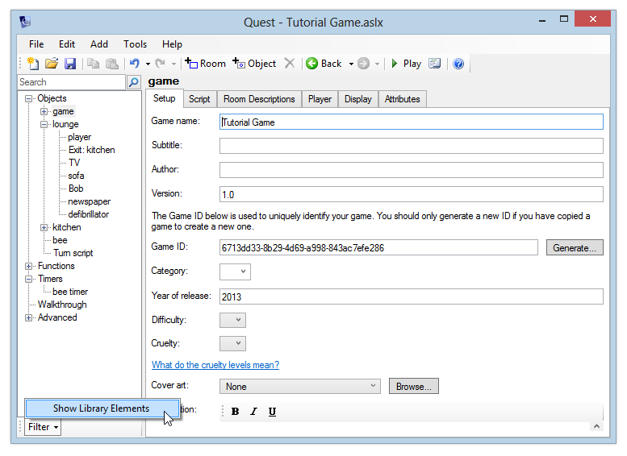
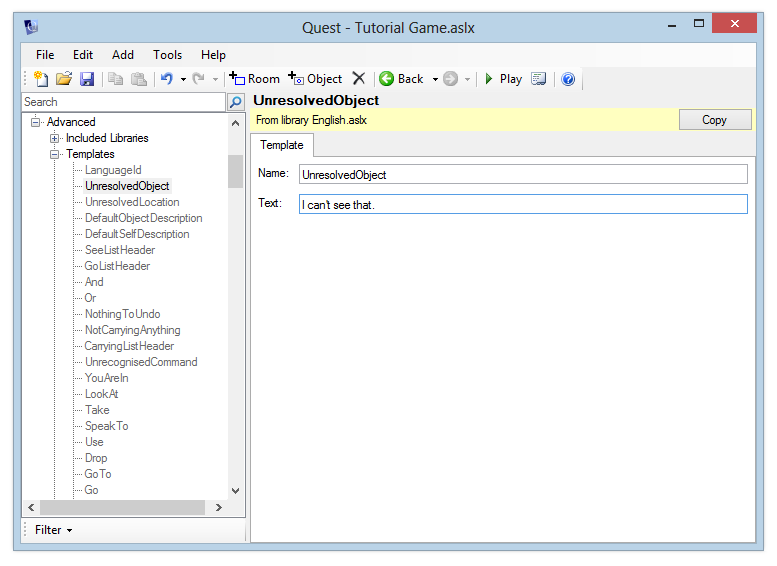

When a player types in a command that Quest doesn't recognise, it will by default respond "I don't understand your command". If you mis-type the name of an object, you get "I can't see that". These responses are all very well, but it might break the flow of our game if they don't fit in with the rest of the text that we've written. Fortunately, Quest provides a way for you to change all of its default responses - in fact none of the text is "hard coded" at all, which is why it is possible to create games in any language, not just English.
The standard responses are all defined by templates, and these all exist in the standard libraries. These libraries contain standard game text, most of the standard behaviour in a game, all of the Editor screens - in fact a lot of Quest's functionality comes from the libraries. The libraries are .aslx files, just like your game file - a lot of Quest is in fact written in Quest itself.
Everything in the libraries is included in your game, but the Editor usually hides all this from you, so you can focus on your game itself. You can view library elements by clicking the Filter button at the bottom of the editor tree, and selecting "Show Library Elements".

When you turn this on, you'll see all of the standard commands and functions that are included in a game.
Click "Advanced" in the tree and then "Templates". You'll see a full list of templates.

To edit one of these templates, you must first copy it into your game file, as you can't edit the library directly. Click the "Copy" button in the top right, and you'll be able to modify the template text.
There is a second section "Dynamic Templates", which contains templates which are more than just static text. These templates change depending on the object they're referring to. For example, the TakeSuccessful template is used when you pick up an object - usually it says "You pick it up", but in the case of a plural object it would say "You pick them up".
A Dynamic Template is an expression, and the relevant object is passed in to the expression via a variable called "object". So the TakeSuccessful template expression is:
"You pick " + object.article + " up."
Using the object article means that this template can print the correct thing for a singular or plural object, or even a male/female character if you have one that can be taken.
These Dynamic Templates often take advantage of some functions which are defined in the English.aslx library - the Conjugate and WriteVerb functions ensure that correct English is written. For example, the AlreadyOpen template is:
WriteVerb(object, "be") + " already open."
This means it will correctly write "It is already open", "They are already open" etc.